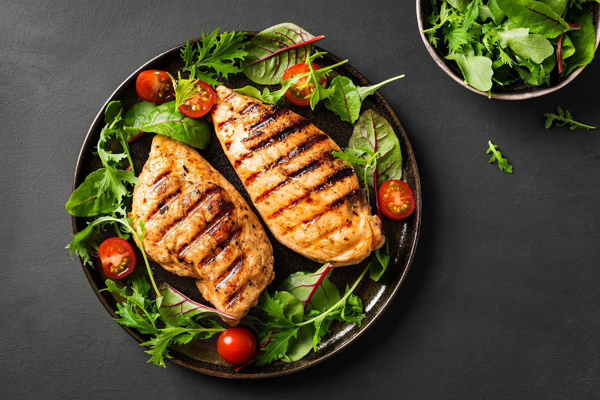
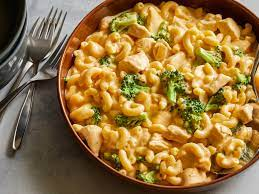

Ingredients:
- 1 pound pre-tenderized cube steaks, or round steaks (4 steaks)
- Kosher salt, for seasoning the meat
- 2 large eggs, beaten
- 1/2 cup milk
- 2 cups all-purpose flour
- 2 teaspoons kosher salt, for breading
- 1 1/2 teaspoons garlic powder
- 1/2 teaspoon cayenne
- Canola oil, peanut oil, olive oil, or other fat for frying For the gravy:
- 3 tablespoons pan drippings
- 3 tablespoons all-purpose flour
- 1/4 cup heavy cream
- 1 3/4 cups milk (a little more or less, depending on your preference)
- Kosher salt, to taste
- Freshly ground black pepper, to taste
Instructions:
For the steak:- Begin with setting up an assembly line of dishes. Beat the milk with the eggs in one; the flour mixed with the seasoned salt, 1 1/2 teaspoons black pepper, paprika and the end to receive the breaded meat.
- Work with one piece of meat at a time. Sprinkle both sides with. Place the breaded meat on the clean plate.
- Heat the oil in a large skillet over medium heat. Add the butter. you know it's ready. For the gravy:
- When the grease is hot, sprinkle the flour evenly over the grease. Using a whisk, mix the flour with the grease, creating a golden-brown paste. Add more flour if it looks overly greasy; add a little more grease if it becomes too pasty/clumpy. Keep cooking until the roux reaches a deep golden brown color.
- Serve the meat next to a big side of mashed potatoes. Pour gravy over the whole shebang!

Ingredients:
- 2 large skinless boneless chicken breasts pounded to 1-inch thickness (or 4 boneless and skinless chicken thigh fillets) Salt and pepper, to season
- 1/2 teaspoon paprika (sweet or smokey)
- 1/2 teaspoon dried parsley
- 1 tablespoon oil, divided (use olive or canola oil)
- 2 tablespoons butter
- 1 small yellow onion chopped
- 6 cloves garlic finely diced
- 1/3 cup white wine OPTIONAL (use chicken broth instead if you wish)
- 9 oz (250g) jarred sun dried tomato strips in oil (reserve 2 tablespoons of oil and drain the rest)
- 3 level tablespoons flour
- 2 cups chicken broth
- 3 cups milk OR light cream* or half and half, divided
- 2 teaspoons dried Italian herbs
- 10 ounces (300g) elbow macaroni uncooked (3 cups!)
Instructions:
- Season chicken with salt, pepper, paprika, dried parsley and 2 teaspoons of the oil. Heat the remaining oil in a large (30cm or 12-inch) pot or pan over medium-high heat. Add the chicken and sear on both sides until golden brown, cooked through and no longer pink in the middle. Transfer chicken to a warm plate, tent with foil and set aside.
- To the same pan, add the butter and fry the onion and garlic until the onion becomes transparent, stirring occasionally (about 2 minutes). Pour in the white wine and allow to simmer for 5 minutes, or until beginning to reduce down.
- Add the sun dried tomatoes with 2 tablespoons of the sun dried tomato oil from the jar and cook for 1-2 minutes to release as much flavour as possible.

Ingredients:
- Olive oil
- Boneless skinless chicken breasts
- 21 Salute Seasoning (or poultry seasoning)
- Salt
- Pepper
- White wine or chicken broth
- Butter
- Garlic
- Fresh parsley, optional
Instructions:
- To a large skillet, add olive oil, chicken breasts seasoned with 21 Salute Seasoning, salt, pepper, and sear on the first side for about 5 minutes.
- Flip chicken oven and cook on the second side for about 5 minutes.
- When the chicken is done and cooked through, remove it from the pan and allow it to rest on a plate.
- Deglaze your pan with a splash of wine, add the butter, garlic, and cook for one minute, or until the butter has melted and the garlic is fragrant.
- Return the chicken to the pan, toss it in the garlic butter sauce, garnish with parsley, and serve.